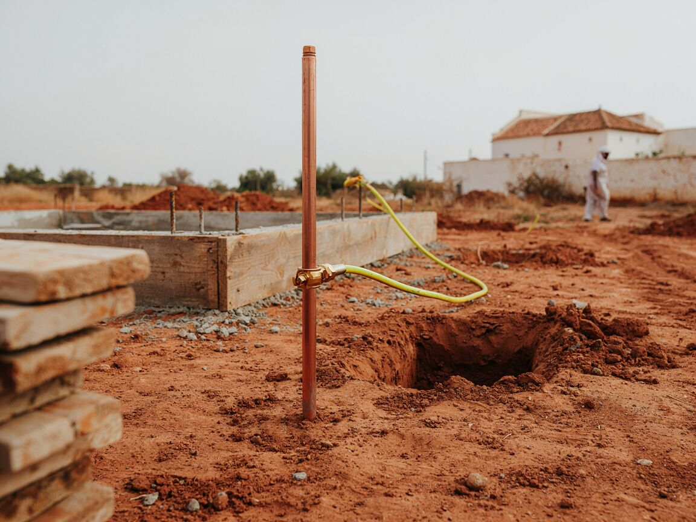
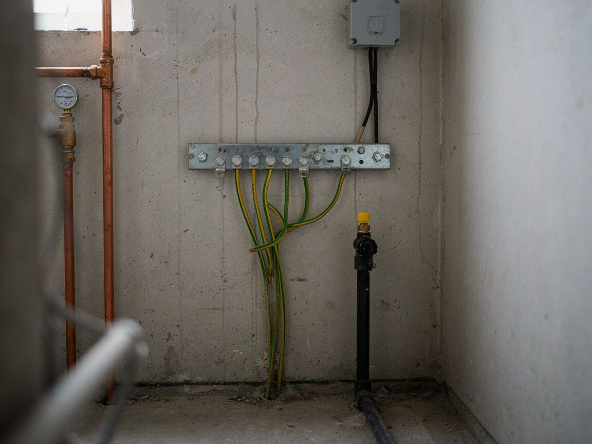
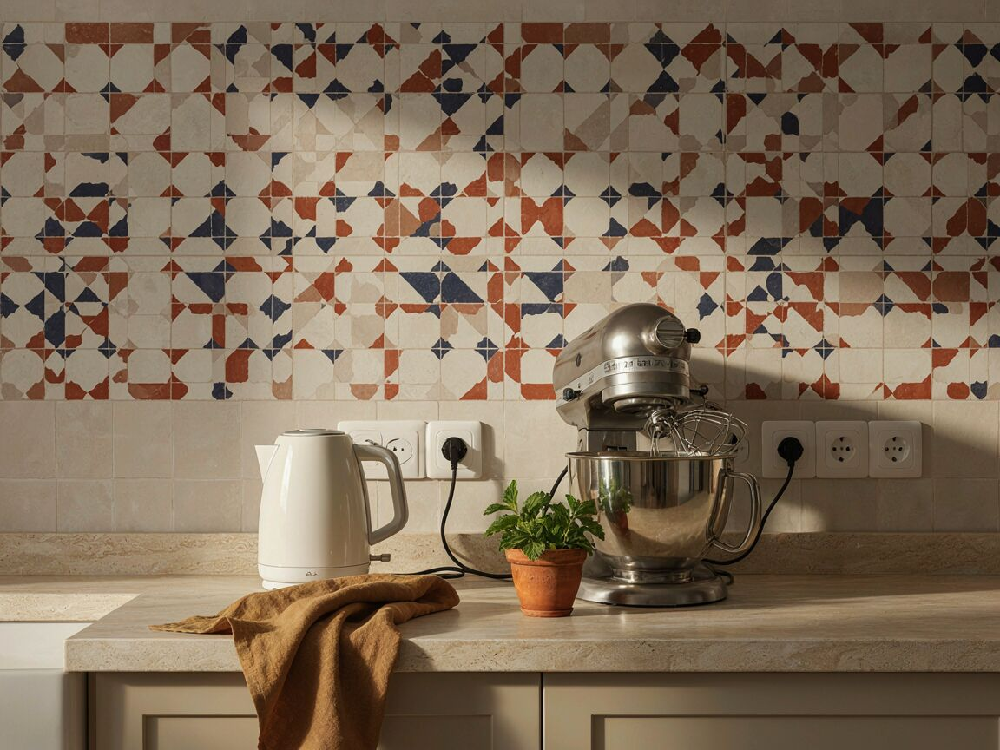
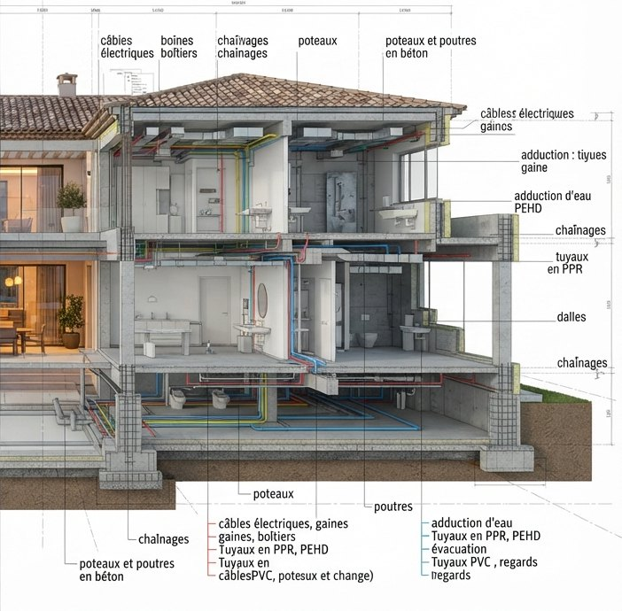
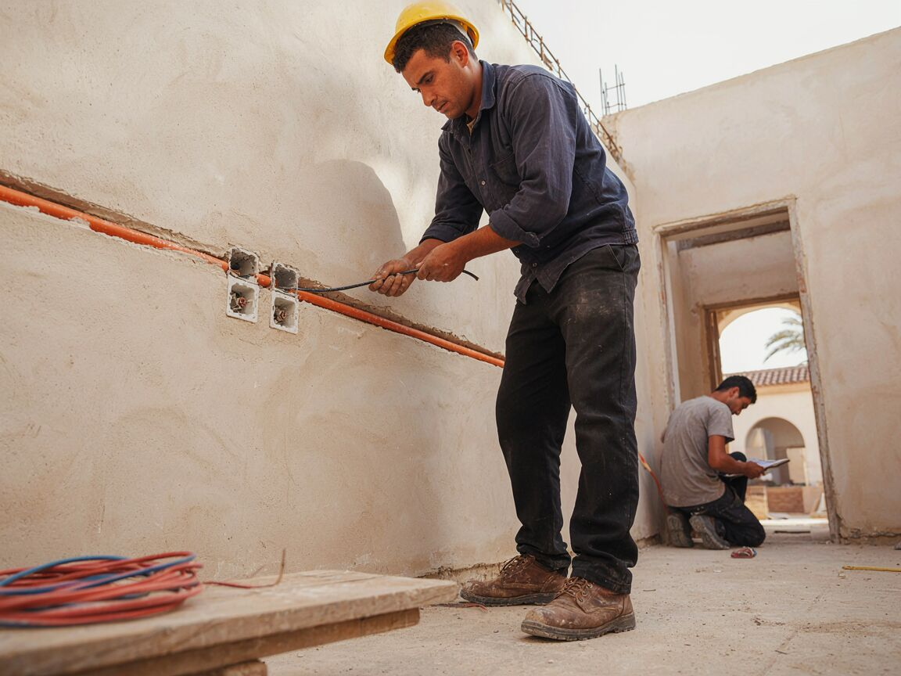

No article matches. See all topics.

How many sockets per circuit? The NF C 15-100 rules explained
The number of sockets allowed on a circuit depends on the wire cross-section and the circuit breaker rating. Here are the NF C 15-100 benchmarks, the reference used by engineering firms in Morocco.
Read the article →
Mandatory dedicated circuits: oven, washing machine, A/C and more
Some appliances must have their own line from the distribution board. Which ones, with what cross-section and which circuit breaker, and what to plan for an air-conditioned villa in Marrakech.
Read the article →
Oven and hob: which cable and which circuit breaker to choose?
The kitchen concentrates the most powerful appliances in the house. Here are the usual cable cross-sections and circuit breaker ratings for the oven and hob, and frequent mistakes on site.
Read the article →
Circuit breaker or residual current switch: what is the difference?
Three devices with similar names, three different roles in the distribution board. Understanding the difference helps you read a quote and know why a device "trips".
Read the article →
30 mA RCD type AC, A or F: which one for which circuit?
Not all 30 mA residual current switches detect the same leaks. The right type depends on the appliances connected, and the question matters in a Moroccan villa heavily equipped with air conditioning.
Read the article →
How many residual current switches for your home's floor area?
The number of residual current switches depends on the floor area of the dwelling and the number of circuits. Here is the reference table and how to distribute the circuits in a villa.
Read the article →
Cable cross-section and circuit breaker rating: the reference table
The circuit breaker rating is chosen according to the cross-section of the cable it protects. Here is the usual table for domestic installations, and the cases where you need to go beyond a table.
Read the article →
Earthing a house: earth rod, foundation loop, resistance
The earth electrode carries away fault currents and allows residual current devices to do their job. The best solution is decided when the foundations are laid.
Read the article →
Main equipotential bonding (LEP): role and installation
Main equipotential bonding brings all the metal parts entering the building to the same potential. A discreet wire, but essential for safety.
Read the article →
Supplementary equipotential bonding (LES) in the bathroom
In the bathroom, water and wet skin make an electric shock far more dangerous. Supplementary equipotential bonding brings everything metal in the room to the same potential.
Read the article →
Bathroom zones 0, 1, 2: what electrical equipment is allowed?
NF C 15-100 divides the bathroom into zones around the bathtub and shower. The closer you get to water, the stricter the rules.
Read the article →
Distribution board and GTL: location, number of rows, spare capacity
The distribution board and the dwelling technical duct (GTL) bring together the power supply and the protective devices. Their location and size are decided on the drawings, not on site.
Read the article →
Minimum number of sockets and light points per room (NF C 15-100)
The standard sets a minimum number of sockets and light points per room. These are floors, not targets: in a villa, you almost always plan for more.
Read the article →
Kitchen electrics: sockets, circuits and heights by the standard
The kitchen is the room with the heaviest electrical load in a house. Here is the number of sockets, the circuits to plan and the locations to avoid, based on the NF C 15-100 benchmarks.
Read the article →
Surge protector: when is it useful or mandatory for a house?
A storm several kilometres away can be enough to fry a router, an alarm panel or an air conditioner's circuit board. A surge protector limits these overvoltages; here is when it is required and when it is simply sensible.
Read the article →
Single-phase or three-phase for a villa in Morocco: how to choose
The choice between single-phase and three-phase is made when applying for a connection to the distributor. It depends on the villa's total power and on a few large pieces of equipment.
Read the article →
Villa power assessment: what meter capacity to request
Adding up the power of every appliance gives a figure that is too high: they never all run at the same time. The power assessment is used to request the right connection, neither too small nor oversized.
Read the article →
Voltage drop and cable length: calculation and rules to follow
The longer and thinner a cable, the more the voltage falls at the far end. In a villa with a garden, pool house or distant gate, it is often the length, not the circuit breaker rating, that determines the cable size.
Read the article →
Swimming pool electrics: zones, 12 V SELV and filtration panel
A swimming pool combines water, the human body and electricity: the most dangerous combination. The rules are based on zones around the pool, as in a bathroom, but with greater distances.
Read the article →
Home EV charger in Morocco: power, cable and price
Charging an electric car from an ordinary socket is slow and puts strain on a circuit that is not designed for it. A wall-mounted charger (wallbox) on a dedicated circuit is the normal solution at home.
Read the article →
Solar panels for self-consumption: what Law 82-21 changes
Since the implementing decree of Law 82-21 came into force, private individuals can connect their solar panels to the grid within a defined framework. Here are the rules, the procedures and how to size a cost-effective installation.
Read the article →
Electrical wire colours: live, neutral and earth by the standard
Conductor colours are not decorative: they let any electrician instantly identify the neutral, the earth and the live conductors. Here is the code to follow and its limits.
Read the article →
Circuit breaker or RCD keeps tripping: causes and diagnosis
A tripping circuit breaker is not a fault: it is a protective device doing its job. But you still need to know which one tripped, and why, before resetting it.
Read the article →
Villa electrical installation price in Morocco: 2026 benchmarks
Electrical quotes for the same villa can vary threefold. The gap almost always comes from the scope: number of points, quality of materials, low-voltage systems, outdoor areas. Here is how to read the prices.
Read the article →
Villa low-voltage systems: RJ45, communication enclosure, fibre
Wi-Fi does not replace cable. In a reinforced concrete villa, with several floors and thick walls, a well-designed RJ45 network planned from the structural works stage avoids years of unstable connections.
Read the article →
Generator for a villa: power, changeover switch and price
For an isolated villa, a site at the end of the line or a guesthouse that cannot afford a power cut, a generator is an insurance policy. Badly connected, it becomes dangerous for you and for grid workers.
Read the article →
Villa electrical installation: NF C 15-100 and its key rules
Why the NF C 15-100 standard is the reference for electrical studies in Morocco, what changed with the 2024 edition, and the points to check on your project.
Read the article →Need a study for your project?
SIGMA ICC carries out engineering studies and site supervision in Marrakech and across Morocco.